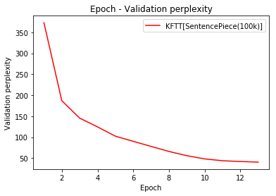

Graph¶
Epoch - Validation perplexity¶
In [3]:
import numpy as np
import matplotlib.pyplot as plt
x = np.array([1, 2, 3, 4, 5, 6, 7, 8, 9, 10, 11, 12, 13])
sp100k = np.array([
372.88,
186.85,
145.35,
124.43,
102.25,
89.99,
77.89,
65.84,
55.78,
48.04,
43.75,
41.81,
40.45,
])
plt.plot(x, sp100k, label = "KFTT[SentencePiece(100k)]", color = "red",
)
plt.xlabel("Epoch")
plt.ylabel("Validation perplexity")
plt.title("Epoch - Validation perplexity")
plt.legend(loc = 1)
plt.show()

In [7]:
from IPython.display import HTML
HTML('''<script>
code_show=true;
function code_toggle() {
if (code_show){
$('div.input').hide();
} else {
$('div.input').show();
}
code_show = !code_show
}
$( document ).ready(code_toggle);
</script>
<form action="javascript:code_toggle()"><input type="submit" value="Click here to toggle on/off the raw code."></form>''')
Out[7]: